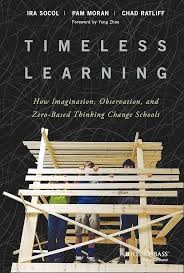

Practice
Generative leadership for schools that hold.
Most reform hands schools better tools. We develop the leaders the tools pass through — leaders with the sight to spot the structures a century of reform couldn't touch, the distance to hold them in question, and the creative capacity to build something better from what's already in the building.
The Framework
Generative leadership: See. Hold. Build.
A century of reform has washed over the American school and left its structure standing — rigid periods, siloed subjects, sorted students, letter grades. Tyack and Tobin named it the grammar of schooling, and the metaphor is exact. Like the grammar of a language, the rules are old enough and deep enough that nobody asks why they're there: speakers follow grammar because the sentence sounds right, and educators follow this one because a school arranged this way simply sounds like a real school. The grammar persists not because anyone defends it, but because almost no one sees it. And it doesn't live only in the schedule. It lives in leaders trained inside it.
Generative leadership is our name for what breaking the grammar requires — chosen because the word means exactly what the work demands. Not a new set of practices to acquire, but three capacities to develop, in order, and the third is the point: the creative capacity to originate arrangements no rulebook prescribed. Each capacity makes the next possible. Skipping ahead is how false starts happen.
First
See
Institutional sight
Learn to spot the grammar — in the master schedule, the grading policy, the tracking logic, and in your own instincts about what a "real school" requires. Your own data, fully disaggregated, shows whom the current arrangements serve and whom they cost.
Then
Hold
Critical distance
Develop the internal distance to tell a real boundary from a habit wearing a boundary's costume — and to meet ambiguity as material rather than threat. That doesn't come from information. It comes from hard questions, honest reflection, and coaching that changes how you think.
Finally
Build
Creative capacity
Build creative capacity: the power to recombine what the school already holds — time, roles, credit, assessment — into arrangements the grammar never prescribed. In the core of the school, for every student. Now, with the materials on hand.
Inside every Build cycle
Phase 01
Design
Start from the school's own goals and context, not a borrowed template. Build the smallest version worth trying.
Phase 02
Implement
Put it in front of real students on a real schedule. The classroom is the only honest test.
Phase 03
Analyze
Look hard at what happened — what held, what broke, and where the design fought the people using it.
Phase 04
Refine
Rebuild from evidence. Keep what works, cut what doesn't, and hand the cycle back to the team.
Repeated until the structure holds on its own
What "holds on its own" rests on
"Holds" is a claim you can check. Every practice a school counts on rests on something specific — a person, a routine, a relationship, a contract, a funding line — the thing that, removed, interrupts it. Until someone writes that down, survival is luck. Four dependencies do most of the carrying:
Rests on
A person
The teacher who makes the schedule bend, the counselor who holds the exceptions. When a practice lives in someone's head, it leaves when they do.
Rests on
A routine
The standing meeting, the protocol, the revision cycle. Routines carry what no single person has to remember — if anyone protects the time.
Rests on
A relationship
Credit with the central office, trust between two departments. Relationships move what formal authority can't, and they don't transfer by memo.
Rests on
A funding line
The grant, the stipend, the contract, the course release. The dependency everyone can see and almost no one maps past the current cycle.
A pilot isn't finished when it works. It's finished when it no longer needs its founders.
The generative stance — five principles
Start with what's in the building.
Inventory your people, minutes, permissions, and community before writing a vision. Design from what you have, and something real exists by spring.
Keep experiments small enough to survive failing.
Size every test so failure teaches instead of wounds — protecting students, teachers, and the leader's capital from pilot whiplash.
Recruit the willing; let them shape the design.
Commitment beats buy-in. What people help build, they keep — and it survives its builders.
Treat surprise as material.
Turnover, budget cuts, upheaval — openings, not interruptions. Some of the most durable redesigns begin as responses to events nobody chose.
Make the future instead of predicting it.
Stop waiting for the perfect policy, the grant, the proof from somewhere else. Act — and create the conditions the plan kept waiting for.
Start Here
Every engagement begins with the Grammar Audit.
Before any design work, we produce a readable account of what your school is carrying and what it's missing. Assets first: the people, minutes, permissions, and partnerships already in the building. Then the constraints: where the schedule, grading, and access patterns are quietly making choices — and for whom. Fixed scope, fixed fee, and built to the decisions actually on your calendar, not the report we'd like to write. And for every practice the school already counts on, the Audit names what it rests on — the first draft of the map above.
Ask about the Audit →Our Team
Practitioners first. Consultants second.
Remaking School stays small on purpose and assembles to fit. Every engagement draws its team from the Bench — a working network of school designers, researchers, evaluators, former system leaders, and facilitators who put students on the research team. People who have built and led the models they advise on. One person can sit with a principal for a season; a full team can map a district. The size of the question sets the size of the team.

Chad Ratliff
Founder · Principal of a nationally recognized public R&D secondary school in Virginia · Lecturer at the University of Virginia in the School of Education and Human Development and the McIntire School of Commerce
Chad runs a school for a living, which is the whole point. He leads a public secondary school whose redesign has drawn national attention — and the advisory work grows out of what that took: making an ambitious model survive a master schedule, a staffing chart, and a Tuesday afternoon.
Two decades in public education span school leadership, district-level innovation and strategy, and the mentoring of new principals. His current work sits at a question most systems now have and few can name: networks became the way American schools try to improve, and almost no one prepares the leaders in the middle of them. He studies that question at UVA — where he teaches What the Innovators Do and Entrepreneurial Thinking for Social Impact — and he works it in practice.
His work has put him in front of audiences that rarely overlap — the White House during the Obama administration, the Virginia General Assembly, the U.S. Patent and Trademark Office, the National Science Foundation, the School Superintendents Association (AASA), and World Maker Faire among them. He has served as principal investigator on a $3.5 million U.S. Department of Education Investing in Innovation (i3) grant and, in addition to UVA, has built research collaborations with the MIT Teaching Systems Lab, Stanford, the Smithsonian, Princeton, and others.
Selected
- Co-author, Timeless Learning
- Walter Eugene Campbell Award for Educational Leadership, University of Virginia (2025)
- National School Boards Association "20 to Watch" in education
- Principal Investigator, $3.5M U.S. Dept. of Education i3 grant
- Virginia Division Superintendent License
- M.Ed., University of Virginia · M.B.A., Virginia Tech · Ed.D. candidate, UVA
In Print

Timeless Learning
How Imagination, Observation, and Zero-Based Thinking Change Schools · Written with Pam Moran and Ira Socol · Foreword by Yong Zhao · Jossey-Bass, 2018
The book behind the practice's oldest habit: start from zero. Watch children closely, take what the evidence shows over what the inherited design assumes, and rebuild school from there. Written from inside public schools, not about them.
Find the book →Engagements
Sized to the question in front of you.
From a single classroom's redesign to a district landscape analysis to a network of schools moving together — the same arc, run at three altitudes. The common thread is contact time with the people doing the work.
For a school
The Grammar Audit, then coaching for the principal and design team — working a real problem from first sketch through what happens when it meets students, with Build cycles that grow the team's creative capacity, aimed at the core of the school, not the periphery.
For a system
Landscape analysis across schools, and strategic advising on the structures — schedules, grading, roles, partnerships — an ambitious model needs to hold. We help leaders look around the corner to what's next.
For a network
Cohort facilitation across convenings and the stretches between them, and support for the leaders in the middle — the roles and routines a network runs on, so schools learn out loud rather than in isolation.
Also available: keynotes and workshops on generative leadership, school transformation, the grammar of schooling, leading networks, and AI from the leader's chair.
The method isn't the missing piece. What's missing is the leadership the method needs to survive contact with a real organization.Chad Ratliff · Founder
Plain Answers
Asked often, answered straight.
What is generative leadership?
Our name for what breaking the grammar of schooling requires: three capacities, developed in order. The sight to spot inherited structures, the distance to hold them in question, and the creative capacity to build new arrangements from what's already in the building. Not a program a school adopts — capacities a leader develops.
What is the grammar of schooling?
Tyack and Tobin's term for the deep structures a century of reform left standing — rigid periods, siloed subjects, sorted students, letter grades. The rules persist not because anyone defends them but because almost no one sees them; a school arranged this way simply sounds like a real school.
What is a Grammar Audit?
A fixed-scope, fixed-fee account of what your school is carrying and what it's missing: assets first, then the constraints, then what each practice you count on rests on. Built to the decisions on your calendar, and the starting point of every engagement.
Who does Remaking School work with?
Principals and design teams, system leaders, and networks of schools building toward learning-centric models. Engagements are sized to the question — one person can sit with a principal for a season; a full team can map a district.
Who is behind Remaking School?
Founder Chad Ratliff, who runs a school for a living: a nationally recognized public R&D secondary school in Virginia. He lectures at the University of Virginia, co-wrote Timeless Learning, and assembles engagement teams from the Bench — practitioners who have built and led the models they advise on.
Start a conversation
Bring the practice to your team.
If your school, system, or network is building toward something more learning-centric — or trying to make one hold — tell us what you're working on.